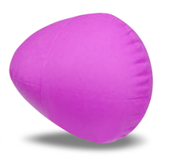

スポーツ推進委員の役割り
市民が生涯スポーツを目指せるよう、市内１２地区から選出された７６名にて、各地域，各事項についての職務を遂行します。
１．市民のスポーツ向上に寄与する。
２．各地域において、体育振興のための活動を行う。
３．市の各機関が行う諸行事に参加し、これに協力する。
ニュースポーツの紹介

スポーツ推進委員ニュース
令和2年度末号
第4回全員協議会
コロナ禍の一年を振り返って
ニュースポーツ紹介
他
コロナ禍の一年を振り返って
ニュースポーツ紹介
他
スポーツ推進委員年間活動計画
スポーツ推進課にて貸し出しできる備品リスト
備品リストです。
貸出実施要領を一読の上、スポーツ推進課にてお申し込みください。
活動の様子
スポーツ推進委員の、活動の写真を掲載していく予定です。
運動会種目の紹介
運動会の種目をいろいろ紹介していく予定です。
各地区における運動会の種目選定の参考になれば幸いです。
 ☆種目紹介☆
☆種目紹介☆茅体指発足５０周年記念式典
茅体指発足５０周年記念式典および祝賀会の様子です。
昭和３６年にスポーツ振興法が制定され、昭和３７年に茅ヶ崎市体育指導委員会が施行されて５０周年をむかえました。
茅体指ニュース300号
茅体指ニュース 300号記念特集号 です。
名称変更のお知らせ
スポーツ基本法の施行（平成23年8月24日）に伴い、「体育指導委員」の名称が「スポーツ推進委員」に変更となりました。
旧：茅ヶ崎市体育指導委員協議会
新：茅ヶ崎市スポーツ推進委員協議会